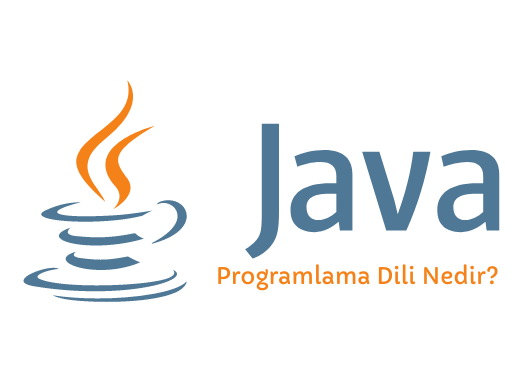

James Gosling tarafından 1995 yılında geliştirilerek piyasaya sürülen Java birçok farklı özelliğe sahiptir.
Java programlama dili herhangi bir bilgisayar mimarisine bağlı kalmaz üstelik platformlarda bağımsız bir şekilde çalışabilir. Bu olayı sağlayan sanal makineye (JVM) Java Virtual Machine denir.
Java Programlama Dili Ne İşe Yarar?
İlk kullanılmaya başlanıldığı dönemlerde küçük cihazlarda düzenlenmiş bir dil olarak hizmet vermekteydi.
Sonrasında diğer dillere oranla daha güvenli ve bir işletme yazılım geliştirme olanağı sunması nedeni ile her yerde kullanılmaya başlandı.
Günümüzde özellikle kurumsal ve mobil alanlarda kendini göstermektedir. Web sitelerine giriş yapmak istenildiğinde çoğu sayfanın Java yüklemesi istediği görünmektedir. Özellikle bu durum oyun siteleri ve forum sitelerinde oldukça yaygın bir durumdur.
Ayrıca şirketlerin bilgi işlem sistemlerinde yer alan bir programlama dilidir. Bu özelliği sayesinde internet uygulamaları ve online iş alanlarında Java önemli bir konumdadır.
Java Programlama Dili Kullanım Alanları
Java sayesinde her türden ağ uygulamasının temelini oluşturmak mümkündür. Dünya genelinde 9 milyon aktif kullanıcısı vardır.
Mobil ve gömülü uygulamalar, web tabanlı içerikler, oyunlar ve kurumsal yazılımların geliştirme ve dağıtımında kendini gösterir. Üstelik bu özellikleri sayesinde küresel bir standart haline gelmiştir.
Java’yı bu kadar popüler bir programlama dili yapan en önemli özellikleri bilgisayar platformları için en geniş kapsama sahip taşınabilir ve yüksek performansa sahip programların geliştirilmesine yardımcı olmasıdır.
Java’nın farklı özellikleri nedeni ile tercih edilme sebepleri şu şekilde sıralanmaktadır:
- Herhangi platformda yazılabilmektedir üstelik farklı sanal platformlarda da çalışabilmektedir.
- Yüksek seviyede özelleştirilmiş yazılım yapmaya elverişlidir.
- Web tarayıcıları için eklenti veya programlar yazılabilmektedir.
- HTML formları veya mağaza anket gibi sunucular da geliştirilebilir.
Java Programlama Dili Başlıca Nitelikleri
Yazım dili olarak oldukça basit bir yapıya sahiptir. Nesne yönelimli olması ile kullanıcılara büyük bir avantaj sağlar üstelik çoklu iş yeteneğine sahiptir.
Dinamik bir yapıya sahiptir. Kodlar hızlı bir şekilde çalışır. Taşıma kolaylığı olması nedeni ile çoğu platformlar ile entegre olarak çalışabilmektedir. Sağlam ve güvenilirdir. Kod çalışması esnasında yüksek performans verir.
Basitlik Özelliği
Java’yı geliştiren kişiler uygulamanın kolay yazılabilmesi ve düzeltilebilmesi için bazı çalışmalar yapmıştır. Diğer programlardan daha basit olmasının asıl nedeni işi biten nesneleri yok etmesidir.
Nesne Yönelimli Olma Özelliği
Java programlama dili kullanıcılarına birçok önemeli özellik sunar. Bunlar; katılım, çok biçimlilik, hata ayıklama, modular programlama ve kodların yeniden kullanabilmesi gibi nesnel yönelimli olma özelliğini oluşturan temel unsurlardır.
Çoklu İş Yapma Yeteneği
Java bir bilgisayarda birden fazla iş yapmaya olanak sağlar. Farklı diller ile birlikte entegre çalışır. Java’nın popüler olmasının diğer bir nedeni ise platformlardan bağımsız olarak çalışmasıdır.
Javanın Önemli Özellikleri
Javayı genel olarak diğer kodlama dillerinden ayıran bazı özellikleri bulunmaktadır. Açık kaynak kodlu olup nesne yönelimli programlama dili olarak anılmaktadır.
Yüksek bir verim ile çalışan Java, çok sayıda fonksiyonlu bir yapıdan oluşmaktadır. Kendine özgü bir dili bulunmaktadır. Ayrıca diğer yazılım dili programlama dilleri ile bağlantılı değildir, platform olarak bağımsızdır. Adım adım işlenen bir uygulama yapısına sahiptir.
JVM sayesinde Java kodları tipik bir şekilde çalışan bytecode dosyasıdır. Kullanıcılar istediği takdirde kodları farklı platformlara entegre edebilir. Bu sayede platform kısıtlaması olmadan uygulama kullanmaya elverişli hale gelir.